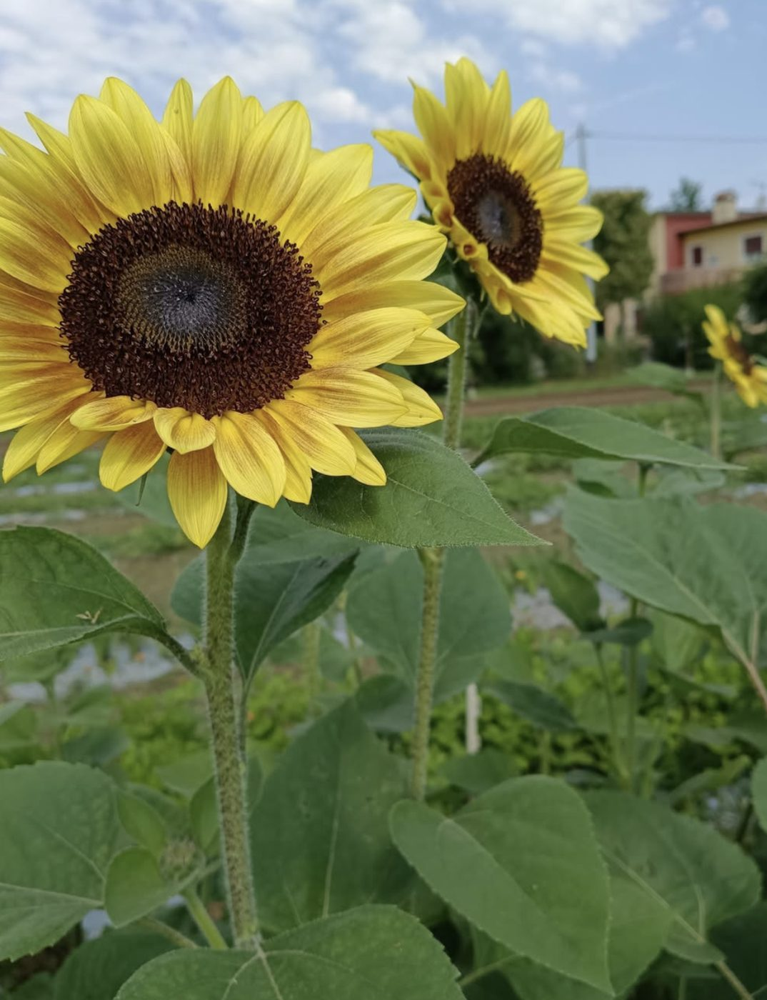
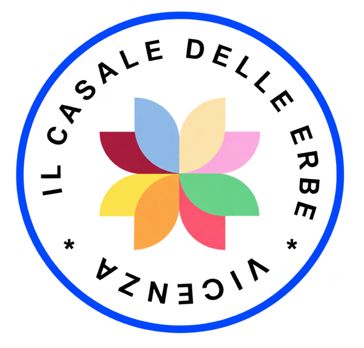
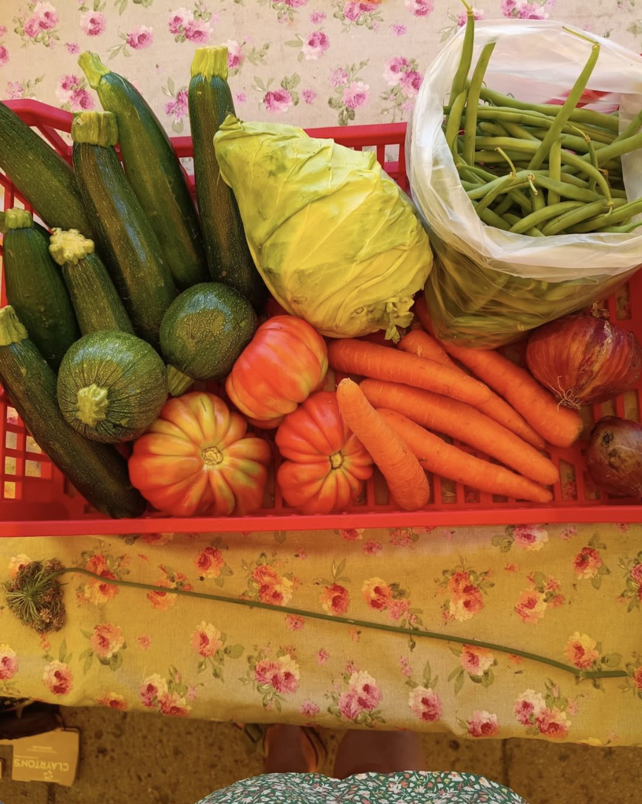
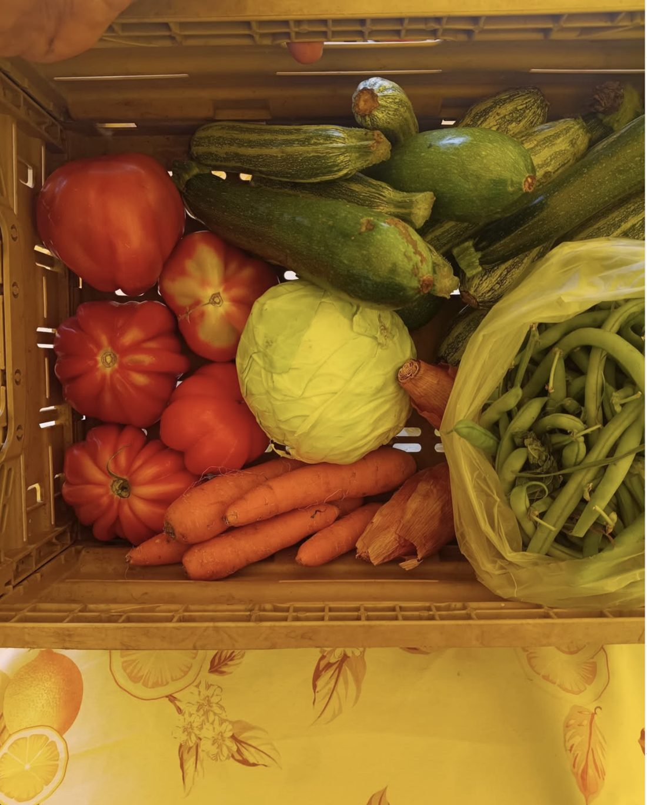
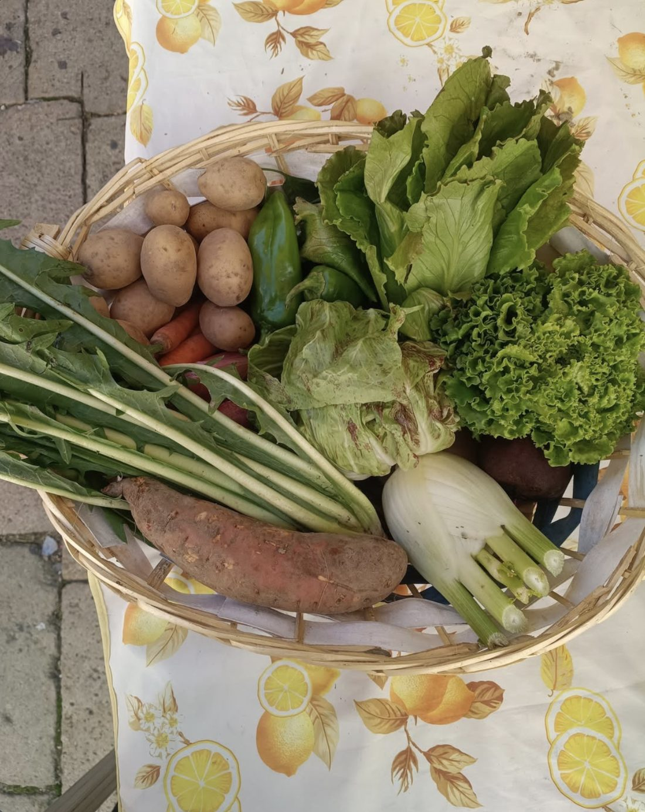
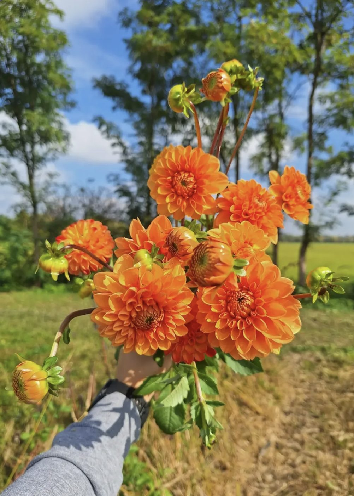
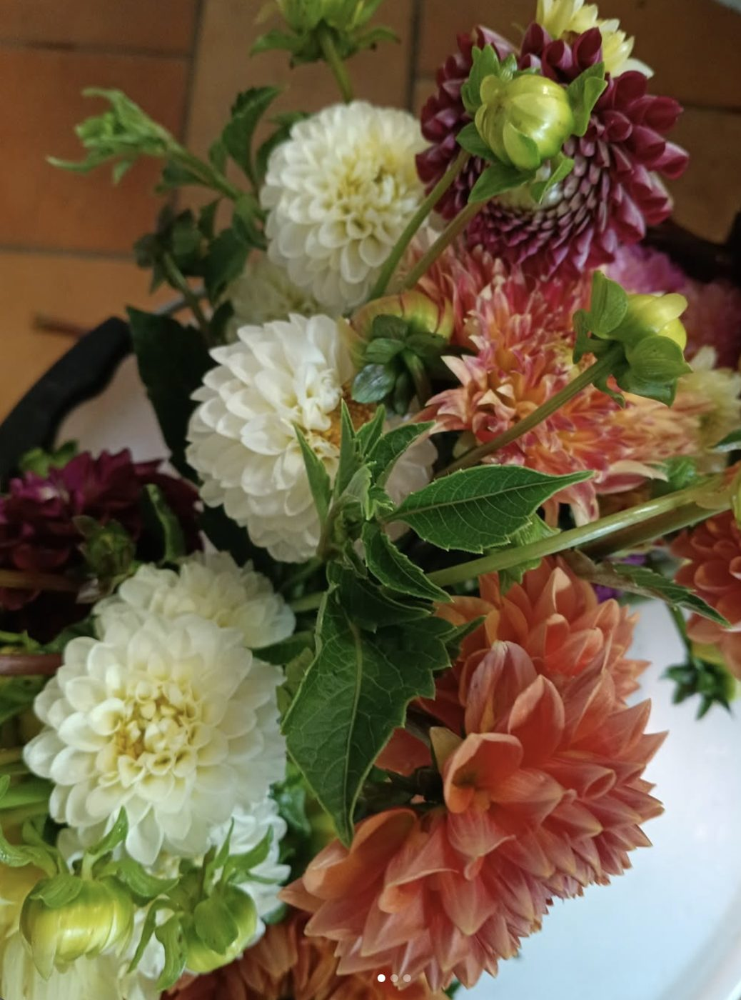

Tisane e infusi
Miscele nostre di erbe officinali essiccate in fattoria: per la sera, la digestione, l'inverno.
Erbe singoleMiscele
Tisane, mieli e verdura di campo da quattro ettari biologici a Bolzano Vicentino. Raccogliamo, essicchiamo e miscelamo in fattoria, poi lo trovi in bottega.




Il Casale delle Erbe nasce come piccola apicoltura di famiglia. Con gli anni le arnie sono rimaste e intorno sono cresciute le piante officinali, l'orto e i fiori.
Oggi Emanuela, Alessandro e la loro famiglia seguono quattro ettari certificati biologici a Bolzano Vicentino. Le erbe le coltiviamo, le raccogliamo e le essicchiamo qui. Le miscele per le tisane nascono in fattoria, una per una.
Niente intermediari. Sappiamo da quale fila del campo arriva ogni foglia che metti in infusione.
Piante officinali in campo aperto, con il metodo biologico e il ritmo delle stagioni.
A mano, nel momento giusto: quando la pianta ha più profumo e più principi attivi.
Lentamente e al riparo dalla luce, per conservare colore e aroma.
Le nostre tisane nascono in fattoria: dosi pensate per il gusto e per il benessere.
Erboristeria e spaccio aziendale nello stesso posto. Quello che non viene dal nostro campo lo scegliamo con la stessa attenzione.
Miscele nostre di erbe officinali essiccate in fattoria: per la sera, la digestione, l'inverno.
Dalle nostre arnie: la storia del Casale parte da qui. Mieli biologici e mieli aromatizzati alle erbe.
L'angolo erboristeria: preparati a base di piante, con un consiglio a voce quando serve.

D'estate zucchine, pomodori cuore di bue e fagiolini; d'autunno insalate, patate e finocchi. Quello che c'è nel campo questa settimana. Chiamaci prima di passare e ti diciamo cosa è appena stato raccolto.
Confetture, passata di pomodoro, agrodolci, sottoli e sottaceti, farine. Il raccolto, messo in barattolo.
Tra le file delle officinali crescono anche i fiori. Li raccogliamo freschi per mazzi semplici, colorati, di campo. Chiedi in bottega cosa è in fiore.


Accogliamo scuole, gruppi e famiglie per scoprire da vicino le api, le erbe officinali e il lavoro della terra. Siamo anche fattoria sociale: la campagna come luogo di inclusione.
Organizza una visitaSiamo in campagna a Bolzano Vicentino, a nord-est di Vicenza. Imposta il navigatore qui sotto: ti porta fino al cancello.
Per ordini, visite in fattoria o solo per sapere cosa è appena stato raccolto, scrivici o chiamaci.